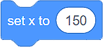
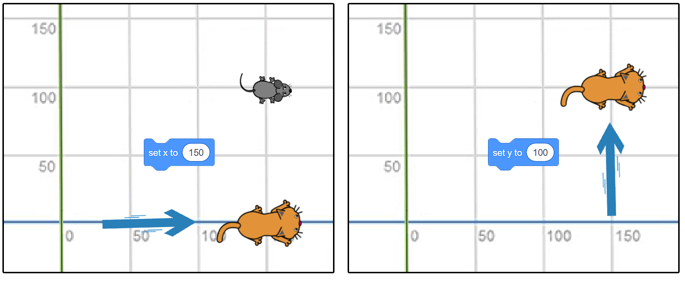

Кретање¶
Сада, када познајеш радно окружење Скреча, умеш да креираш ликове и одредиш њихов положај на позорници, потребно је да научиш кака да их покрећеш користећи наредбе (блокове) из категорије Кретање. Употребљавајући ове блокове бићеш у ситуацији да направиш једноставне игрице и анимације.
Разликујемо три врсте блокова намењих кретању ликова:
Блокове за апсолутно кретање
Блокове за релативно кретање
Остале блокове за кретање
Блокови за апсолутно кретање¶
У категорији Кретање, на располагању имаш 4 блока која омогућавају апсолутно кретање ликова.

Употребљаваћеш их у ситуацијама када буде потребно да програмираш ликове тако да се крећу до тачно одређеног места (тачке) на позорници.
Појурила мачка миша…
Мачка се налази у центру позорнице, а миш у тачки (x:150 y:100).

Подсећамо те да је позорница правоугаони простор ширине 480 и висине 360 корака (пиксела). Центар позорнице налази се у тачки (x:0 y:0).
Ако желиш да мачка улови миша довољно је употребиш блок  .
.
Ако желиш да лов траје, употреби блок  . Тиме обезбеђујеш да мачка клизи једну секунду од тачке (x:0 y:0) до тачке (x:150 y:100).
. Тиме обезбеђујеш да мачка клизи једну секунду од тачке (x:0 y:0) до тачке (x:150 y:100).
Употребом блокова  и  можеш да симулираш прикрадање мачке мишу:
можеш да симулираш прикрадање мачке мишу:

{kind=link}
Дакле, употребом блокова за апсолутно кретање саопштаваш лику тачно место на позорници на које треба да оде.
Тачку у којој се лик тренутно налази (тренутну вредност x: и y:) увек можеш да видиш испод позорнице, у оквиру листе ликова.

Блокови за релативно кретање¶
Остали блокови за кретање¶
У категорији Кретање, на располагању имаш још 4 блока која омогућавају кретање ликова.

Питање 1¶
- Питање
Следеће две скрипте приказују разговор два лика. Да ли је разговор добро усклађен?
Одговор:
Нема паузе, што значи да су ликови причају истовремено Потребно је уметнути инструкције чекај.
Често се чини да су рачунари паметни. Морамо да те разочарамо – рачунари, још увек, не могу самостално да мисле! Рачунари су машине које следе упутства (наредбе) и тако обављају различите задатке.
Наредбе рачунарима пишу људи, мали и велики програмери. Скупови наредби које рачунар извршава називају се програми.
Да би рачунар могао да ти помогне да брже и боље обављаш неки посао, мораш да га за то „обучиш“ - програмираш. Процес програмирања састоји се из две фазе:
Прво, мораш добро да разумеш проблем који желиш да решиш. Мораш да га анализираш, а затим рашчланиш на мање, теби познате проблеме. Уз помоћ својих знања и искустава, треба да осмислиш упутство за његово решавање.
Друго, језиком који рачунар разуме, мораш да му саопштиш како да решава проблем.
Проблеми умеју да делују нерешиво, попут магије.
Ксенија је споменула реч алгоритам. Алгоритам је низ корака који воде до решења неког проблема. Иако је деловало да Ксенија има пуно среће, у ствари се радило о врло прецизном низу корака које је она следила како би дошла до победе.
- Алгоритам А
- Пажљиво прочитај кораке алгоритма А. Како Ксенија зна колико ће Мита коцкица да узме?
- Алгоритам B
- Имаш одлично запажање!
Q-100: Који алгоритам је Ксенија примењивала?

Примећујеш да је, у Ксенијином алгоритму, природа корака различита.
Неки кораци се извршавају по редоследу како су наведени (у чинију ставити 17 коцкица и поводац, узети прву коцкицу);
Неки кораци зависе од одређеног услова (Ако противник узме 1 коцкицу, узети 3 коцкице, …);
Неки кораци се понављају (кораци 3, 4 и 5 понављају се 4 пута),
Ток алгоритма је делом линијски (корак по корак), делом условљен (од потеза противника зависи Ксенијин потез) и цикличан (неки кораци се понављају).
Да би оно што Ксенија зна знао и рачунар, мораш да му објаниш користећи неки од програмских језика.
Програмски језици су углавном текстуални. То значи да мораш да куцаш наредбе у специфичном облику енглеског језика. На пример, ако користиш Python, наредба да рачунар на екрану испише „Узимам једну коцкицу.“ изгледа овако:
print (‘Uzimam jednu kockicu.’)
Почетницима, програмски језици често делују сложено. Зато су осмишљени визуелни програмски језици. Они ти омогућавају да програмираш без куцања наредби, спајањем графичких блокова. Ух, и ово делује компликовано!
Хајде да видимо како у програмском језику Scratch (чита се Скреч) изгледа исписивање реченице „Узимам једну коцкицу.“

Када рачунар буде извшио ову наредбу, на екрану ће се појавити:

Симпатично, зар не?
Знамо да немаш програмерско искуство у Scratch-у. Ипак, верујемо да ћеш моћи да одговориш на следећа питања.
- Кораке 1 и 2
- Браво! Изгледа да је програмирање заиста једноставно!
- Кораке 1 и 3
- Хм. Шта се дешава у трећем кораку алгоритма? Размисли.
- Кораке 2 и 3
- Хм. Шта се дешава у трећем кораку алгоритма? Размисли.
Q-101: На које кораке Ксенијиног алгоритма се односи следећи низ наредби?

- Корак 3
- Само полако! Размисли опет.
- Корак 4
- Само полако! Размисли опет.
- Корак 5
- Браво! Већ препознајемо будућег програмера!
Q-102: Ова наредба делује сложеније. На који корак Ксенијиног алгоритма се она односи?

Програмирање треба да посматраш као нову врсту писања. Када овладаш техникама и логиком програмирања, моћи ћеш да „пишеш“ нове врсте „текста“ - интерактивне приче, игре, анимације и симулације.
Рачунар је предвидљива машина. Радиће баш оно што му кажеш. Твој програм извршаваће се на потпуно исти начин на различитим рачунарима.
Покушај да даш неко упутство другарицама и друговима. Видећеш да ће свако од њих, иако су добили прецизна упутства, задатак урадити на свој начин. На људе утичу њихове емоције, предзнање, искуство и још много чинилаца.
Лепота програмирања лежи у могућности да машташ и, кроз стварање програма, оствариш своје снове. Рачунар, сам по себи, не рађа креативност, али помаже да се она чује далеко и одјекне громогласно!